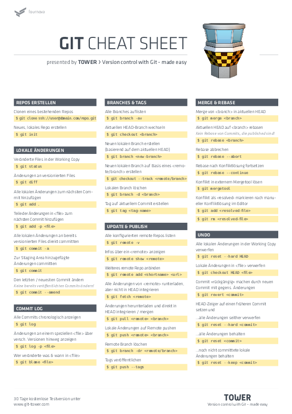
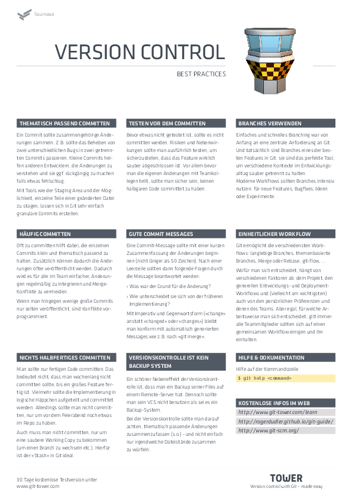

Git Intro¶
Eines der besten Modelle um Git zu verstehen sind Tinker Toys
Wie, werden wir gleich sehen!:
git init git-training-ground
cd git-training-ground
Zeit für Whiteboarding!
clone, branch, switch¶
remotes, push¶
Gute Commit Messages¶
Squash, rebase¶
Cheat Sheet¶
Wir haben uns hier ein Cheat Sheet
 